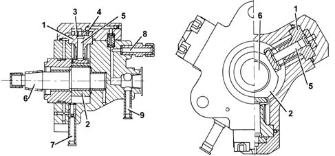
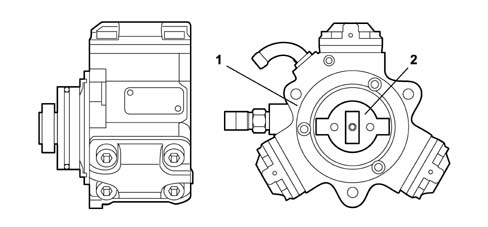
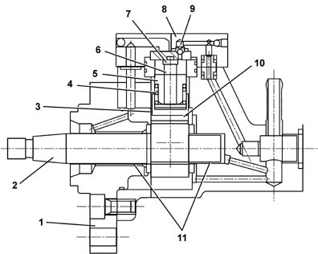
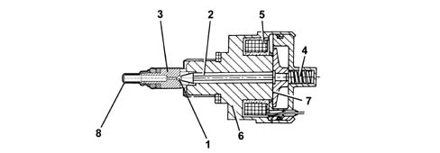
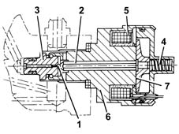
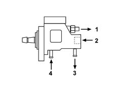
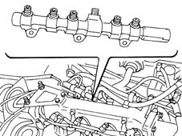

1060E diesel pressure pump
- Path
- Descriptions > 10 ENGINE > 1060 DIESEL FUEL INJECTION > 1060E diesel pressure pump
- Kind
- system description
- Applies to
- all engines; all production periods
- Interactive page
- https://sloeber94.github.io/elrnDB-fDbl/en/#/2582306
Applies to: all engines; all production periods
Type
It is the 'radial jet' type with three radial pistons (total capacity 0.567 cm3) and is driven by the camshaft via an Oldham joint; it has no timing positions.
Applies to: all engines; all production periods
CONSTRUCTION FEATURES
It is the 'radialjet' type with three radial pistons (total capacity 0.657 cc) and is driven by the timing belt without requiring synchronization.
Each pumping unit consists of:
- a piston (5) operated by a cam (2) fixed to the pump (6) shaft;
- – an inlet plate valve (3);
- a supply ball valve (4).

1, Cylinder 2, Cam 3, Inlet valve 4, Supply ball valve 5, Piston 6, Pump shaft 7, Inlet - low pressure (from the diesel filter) 8, Supply - high pressure (rail) 9, Supply - low pressure (recirculation)
Applies to: all engines; all production periods
Structure
Each pumping unit consists of:
- a piston (5) operated by a cam (2) fixed to the pump (6) shaft;
- an inlet plate valve (3);
- a supply ball valve (4).
The pressure pump must be supplied with a pressure of at least 0.7 bar; so the fuel system has an auxiliary pump immersed in the fuel tank.
The maximum supply pressure reaches 1400 bar.
The pressure pump is lubricated and cooled by the same fuel by means of suitable ducts.

1 - Pressure pump 2 - Oldham joint connecting to camshaft
Applies to: all engines; all production periods
OPERATTION
The UNIJET system pump, called Radialjet because it has radial pistons, is driven, without needing to be synchronized with the engine, at a rotation speed which is half the engine speed, for reasons of suitability (retrofit to traditional system).
The movement of the pistons is determined by a cam joined to the pump shaft, with a rocker lever between the piston foot and the cam.
Each pumping unit has an inlet plate valve and a delivery supply valve.
The pump is lubricated and cooled by the same diesel circulating inside, through suitable ducts.
To adjust the delivery pressure, a pressure-regulating solenoid, also called the pressure regulator, is mounted on the pump.
The pump should be supplied at low pressure with a pressure of at least 0.5 bar, with a minimum flow rate of 0.5 l/min. higher than the supply, to ensure correct pump cooling.
The fuel drawn off by the pressure regulating valve and the fuel used for cooling and lubrication of the pump are sent to the tank at atmospheric pressure.

1, Fitting flange 2, Pump shaft 3, Tappet 4, Spring 5, Cylinder 6, Piston 7, Inlet valve 8, Head 9, Supply valve 10, Cam 11, Bearings
Applies to: all engines; all production periods
Structure
It is fitted on the rail and controlled by the injection control unit, and it regulates the fuel supply pressure to the injectors.
The pressure regulator basically consists of:
- a spherical shutter (1);
- a pin (2) controlling valve (3);
- a pre-loading spring (4);
- a coil (5).

1 - Spherical shutter 2 - Pin 3 - Valve 4 - Pre-loading spring 5 - Coil 6 - Casing 7 - Keeper 8 - Filter
Applies to: all engines; all production periods
CONSTRUCTION FEATURES
It is mounted on the pressure pump and controlled by the fuel injection control unit. It regulates the pressure of the fuel supply to the injectors.
Applies to: all engines; all production periods
COMPOSITION
The pressure regulator consists of:
- a ball plunger (1)
- a pin (2) controlling valve (3)
- preload spring (4)
- a coil (5).

1, Ball plunger 2, Pin 3, Valve 4, Pre-loading spring 5, Coil 6, Casing 7, Keeper
Applies to: all engines; all production periods
OPERATION
When the solenoid is not excited, delivery pressure depends on spring preload (150 bars at 1000 pump rpm); shims are used to adjust the preload to the required value.
Pressure is modulated by supplying the solenoid coil at PWM (Pulse Width Modulation) and closing the regulation loop by means of feedback from the pressure sensor; The PWM signal is set to 200 Hz and the duty cycle may be adjusted from 1% to 95% by means of software. The regulator is not replaced by itself, the complete pump is replaced.

1, High pressure outlet 2, Pressure regulator 3, Return (to the tank) 4, Inlet (from the filter)
Applies to: all engines; all production periods
RAIL
The high-pressure diesel accumulation manifold (rail) dampens the pressure fluctuations caused by the three pump strokes occurring at each pump revolution and by the opening of the injectors.
The internal volume of the rail has been designed to dampen these pulsations, without allowing delays in pressure adaptation during transitory moments and without hindering the starting stage, when the rail must fill with diesel.
The rail, made of steel to withstand the high operating pressures, is very long in shape, and comprises a cylindrical cavity with a diameter of 11 mm running along the entire length of the rail; the volume of the cavity is about 34 cm3.
There are through holes for securing the rail to the engine by means of brackets.
